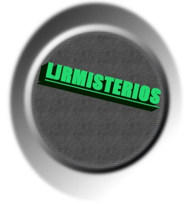

Esse é o site que mostra dados interessantes!
LJR misterios e ciencias

LJR mistérios e ciências
O site que te mostra conhecimnetos, informações e notícias interessantes!

cobra gigante no Congo!
Locais misteriosos no mundo

Mundos perdidos
O simio de Loys
O golem
Skunk ape
O pé grande
O shamir
Slide rock-bolter( A baleia terrestre)
mais conhecimentos fantasticos
Eu também faço desing e arte vetor!